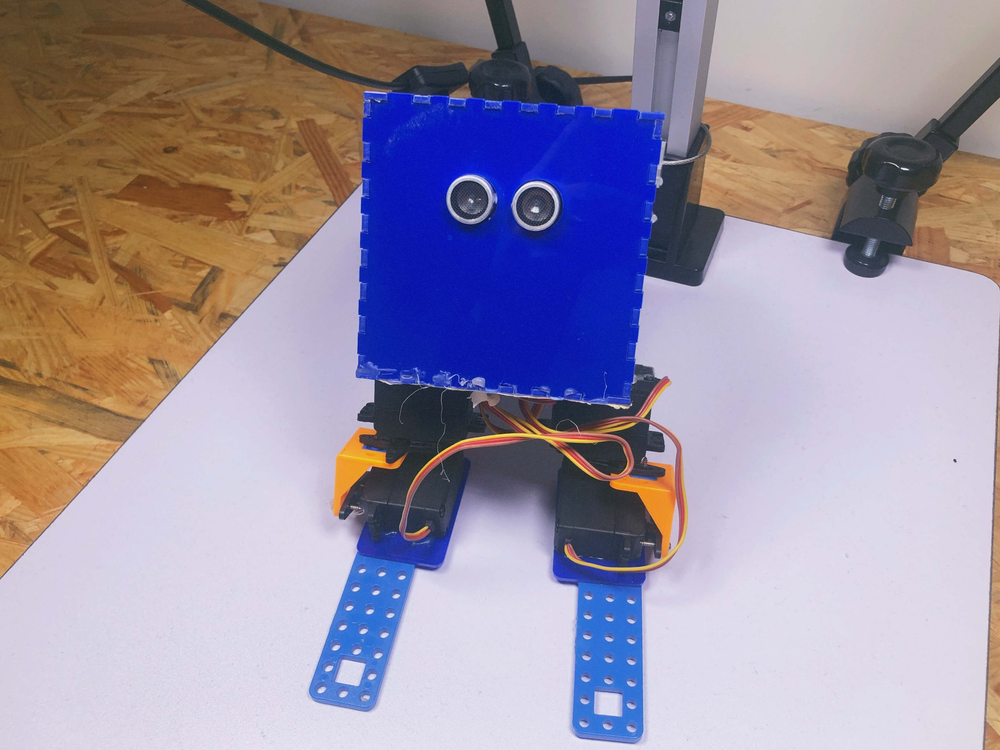
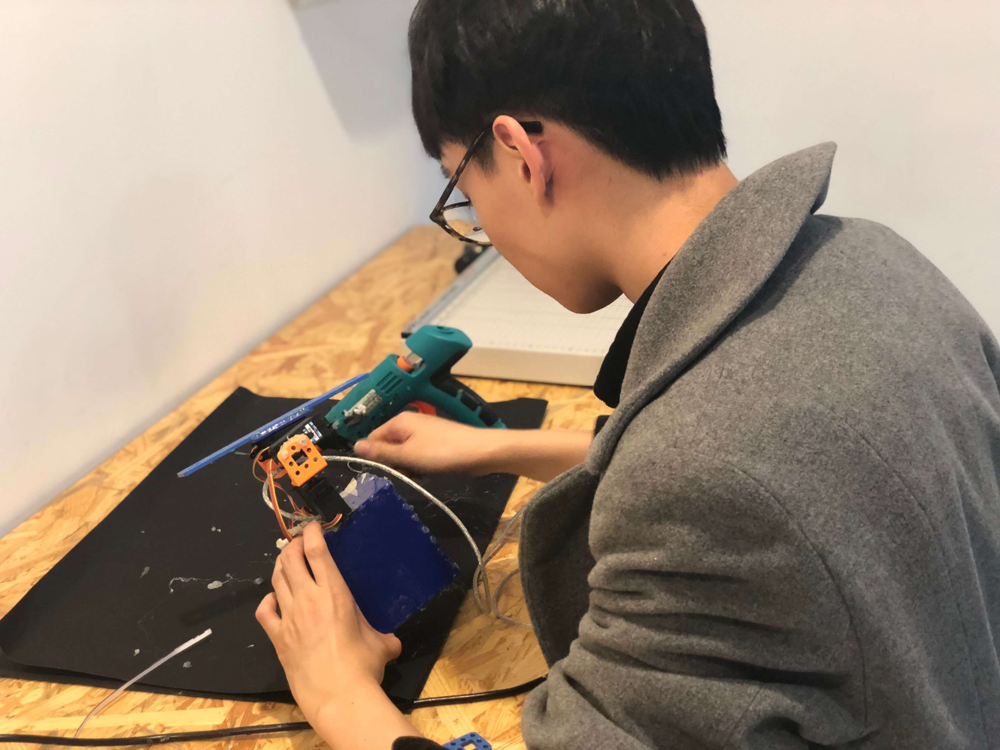
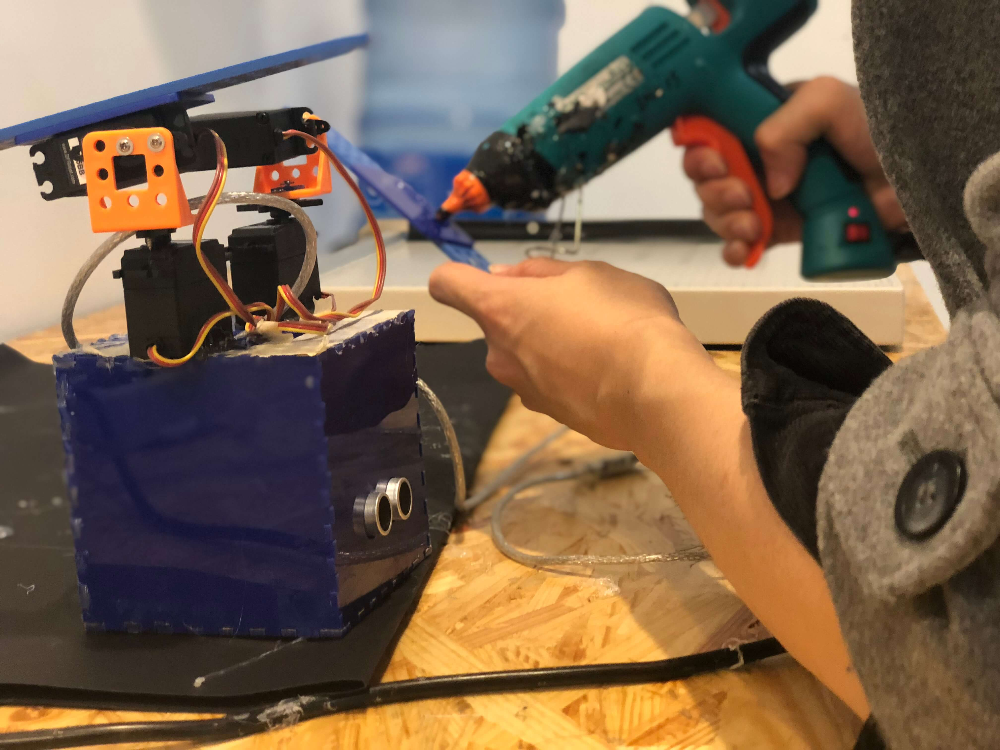
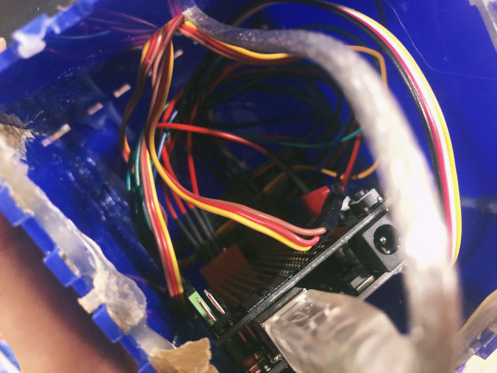
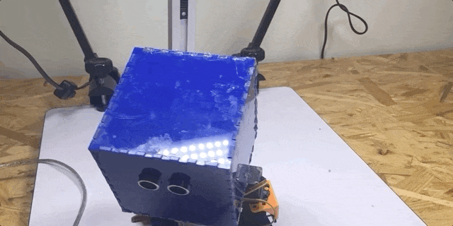

Moonwalk Robot
Spring 2016, Shanghai
Role: Software Programming, Digital Fabrication, Ideation Development

MoonWalk Robot is the first robotics project that I have ever made. It is a shy robot that moonwalks when someone gets close to it. When the robot moves, it also shakes its head. The moonwalk robot has a strong personality that makes the
audience want to play with it, however, the robot keeps moving backward and hiding from the audience.
I used Ultrasonic sensor as the robot's eyes, and laser cut acrylic board as the robot's head. The Arduino board is hidden inside the head with USB cable and multiple wires. The legs are made by DC motors. I hot glued the board after putting
everything together.
The project is exhibited at Interactive Media Arts library at NYU Shanghai.
~~Here to see the source code for the robot~~



Glue the leg after 3 years of not touching my first ever project!

Inside the robot's head

< < back to check other projects
back to top